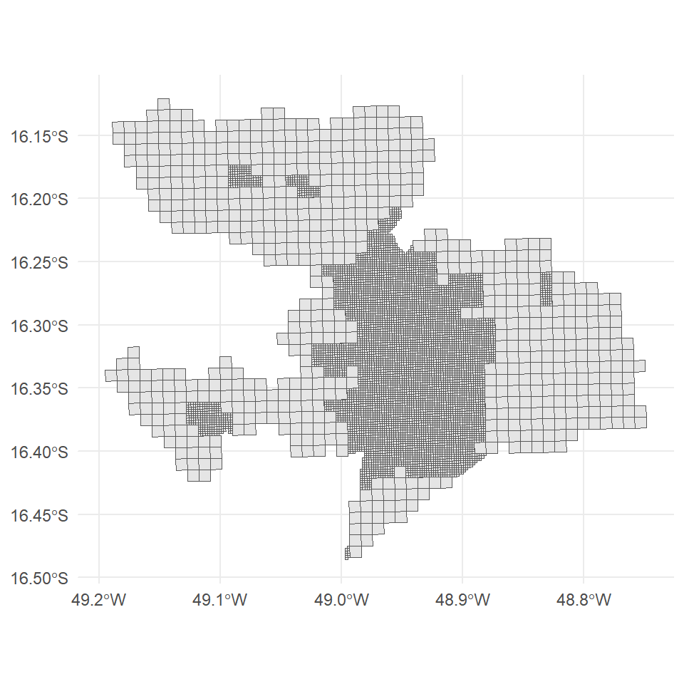
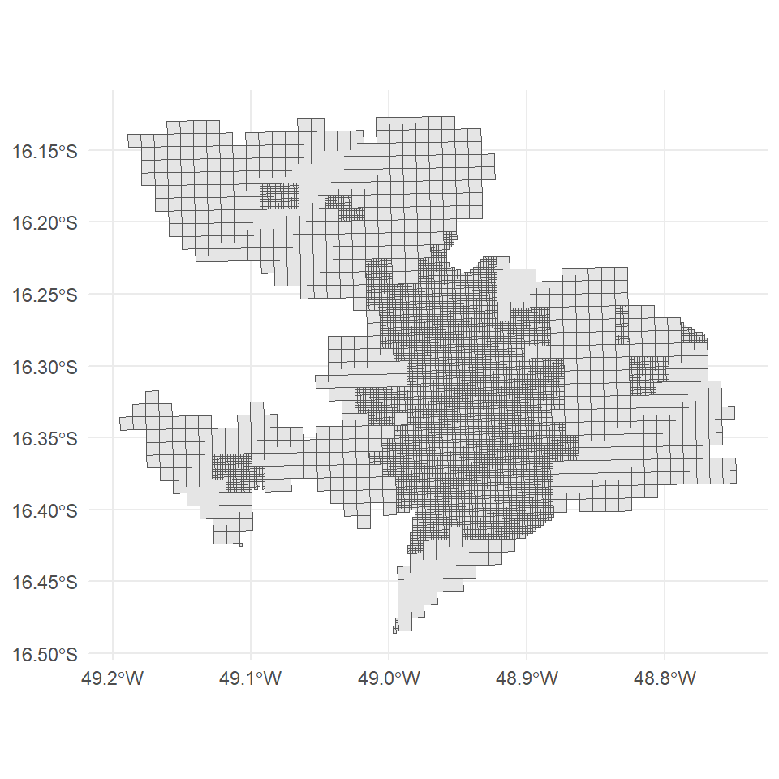
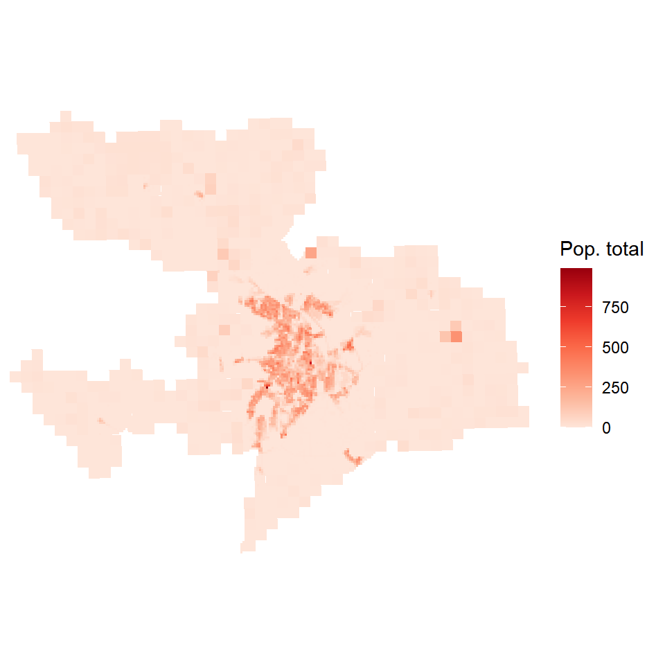
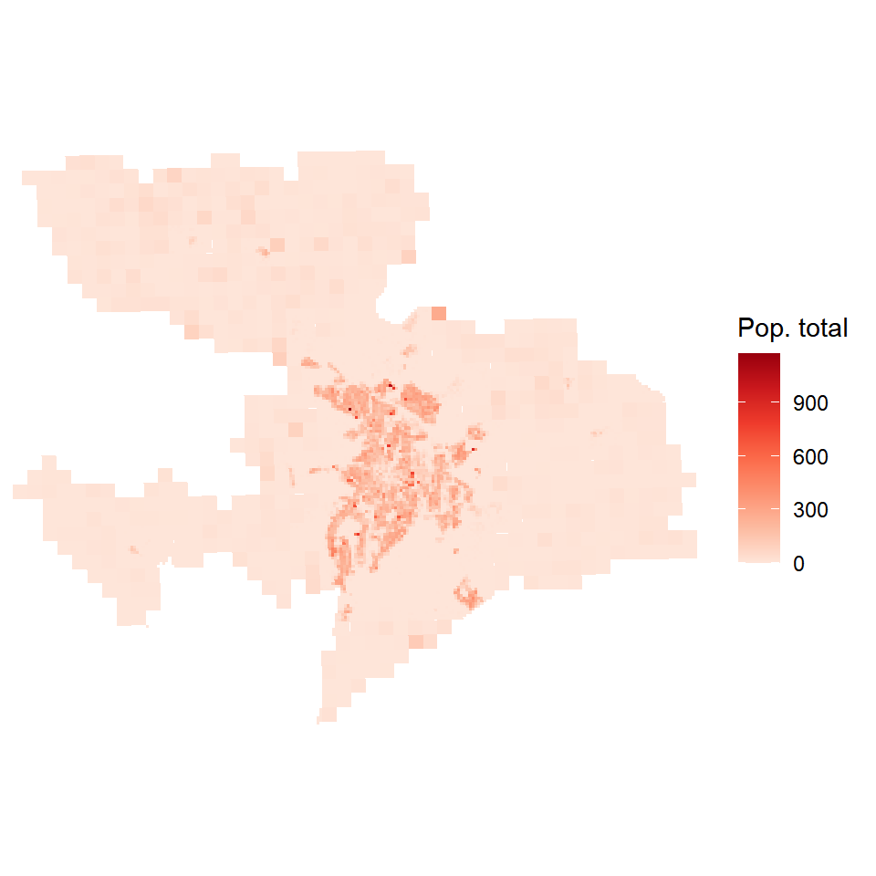
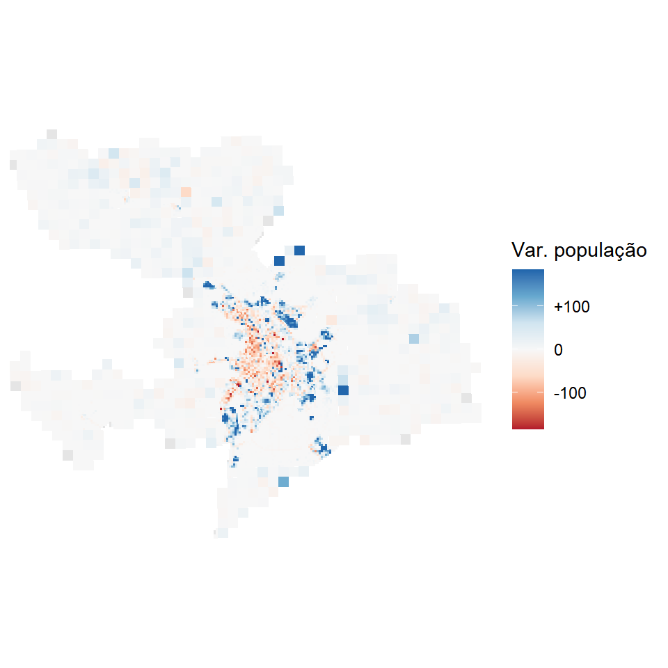
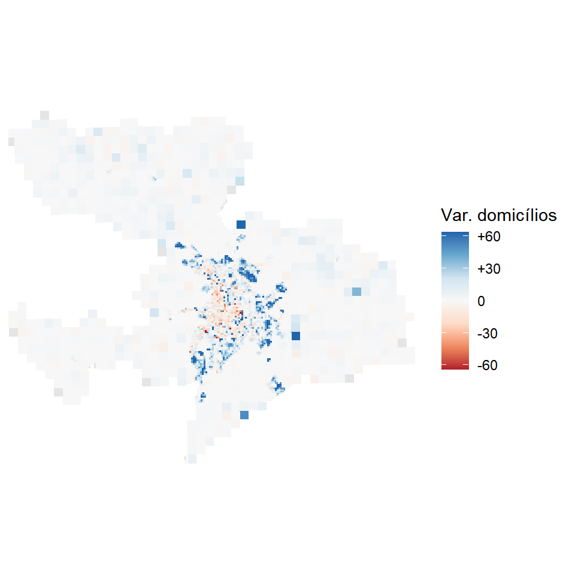

library(geobr)
library(sf)
library(dplyr)
library(stringr)
library(ggplot2)6 Grade estatística
O setor censitário muda de tamanho, de forma e de código entre as edições do Censo, o que dificulta qualquer comparação ao longo do tempo. A grade estatística resolve isso ao distribuir a informação em células regulares de dimensão fixa, com identificador estável entre censos. É o único produto do Censo que permite perguntar, com resolução de 200 metros, onde a cidade cresceu e onde ela esvaziou.
NotaNesta seção você vai
- obter a grade estatística de Anápolis nas edições de 2010 e 2022 com o
geobr - reconhecer a resolução das células pelo identificador e localizar o quadrante
- mapear a população por célula em cada edição
- verificar a correspondência entre as duas edições antes de compará-las
- tratar as células que foram subdivididas e mapear a variação de população e de domicílios
DicaScript deste capítulo
Abra o arquivo scripts/6-grade.R no projeto da oficina. É nele que vai o código apresentado a seguir. Se ainda não tiver o projeto, volte ao Capítulo 1.
6.1 Obtenção da grade
A partir da versão 2.0.0 do geobr, a função read_statistical_grid() entrega a grade já recortada por município. Bastam o ano da edição em year e o código IBGE em code_muni. Duas linhas substituem todo o trabalho de identificar quadrantes, baixar arquivos compactados, empilhá-los e recortá-los.
anp_code <- lookup_muni(year = 2022, name_muni = "Anápolis")$code_muni
anp_ge10 <- read_statistical_grid(year = 2010, code_muni = anp_code, showProgress = FALSE)
anp_ge22 <- read_statistical_grid(year = 2022, code_muni = anp_code, showProgress = FALSE)
c(celulas_2010 = nrow(anp_ge10), celulas_2022 = nrow(anp_ge22))celulas_2010 celulas_2022
7354 8092
Dica
O argumento code_muni aceita mais do que um município. Com a sigla ou o código de dois dígitos de uma UF, baixa o estado inteiro, e com "all", o país. Para o estado ou o país, porém, o volume não cabe na memória, e aí o argumento output aceita "duckdb" ou "arrow", que devolvem uma tabela espacial preguiçosa para filtrar e agregar antes de trazer para a sessão.
6.2 Resolução das células e quadrante
Cada polígono é uma célula de 200 m, em área urbana, ou de 1 km, em área rural. O próprio identificador diz qual é, pelo prefixo do campo id_unico.
anp_ge10 |>
st_drop_geometry() |>
select(id_unico, pop_total, dom_ocu, quadrante) |>
head()# A tibble: 6 × 4
id_unico pop_total dom_ocu quadrante
<chr> <int> <int> <chr>
1 1KME5507N9508 0 0 ID_45
2 1KME5508N9507 0 0 ID_45
3 1KME5508N9508 8 2 ID_45
4 1KME5508N9509 3 1 ID_45
5 1KME5508N9529 0 0 ID_45
6 1KME5508N9530 0 0 ID_45 anp_ge22 |>
st_drop_geometry() |>
select(id_unico, pop_total, total_dom, quadrante) |>
head()# A tibble: 6 × 4
id_unico pop_total total_dom quadrante
<chr> <dbl> <dbl> <chr>
1 1KME5507N9508 0 0 ID_45
2 1KME5508N9508 3 1 ID_45
3 1KME5508N9509 0 0 ID_45
4 1KME5508N9530 0 0 ID_45
5 1KME5509N9505 0 0 ID_45
6 1KME5509N9506 0 0 ID_45 bind_rows(
anp_ge10 |> st_drop_geometry() |> count(resolucao = str_sub(id_unico, 1, 4)) |> mutate(ano = 2010),
anp_ge22 |> st_drop_geometry() |> count(resolucao = str_sub(id_unico, 1, 4)) |> mutate(ano = 2022)
) |>
tidyr::pivot_wider(names_from = ano, values_from = n, names_prefix = "ano_")# A tibble: 2 × 3
resolucao ano_2010 ano_2022
<chr> <int> <int>
1 1KME 666 636
2 200M 6688 7456unique(anp_ge22$quadrante)[1] "ID_45"Anápolis cabe inteira em um único quadrante de 500 por 500 km, o ID_45. Entre 2010 e 2022, as células de 1 km caíram e as de 200 m aumentaram, o que é o registro cartográfico da urbanização do município e terá consequência direta na comparação entre as edições.
Os dois mapas abaixo mostram apenas o desenho das células, sem dado algum, para tornar essa mudança visível.
ggplot(anp_ge10) + geom_sf(linewidth = 0.05) + theme_minimal()
ggplot(anp_ge22) + geom_sf(linewidth = 0.05) + theme_minimal()

6.3 População por célula
O geobr padroniza o nome da população total como pop_total nas duas edições, o que poupa lidar com os nomes originais do IBGE e permite reaproveitar o mesmo código trocando apenas o objeto de entrada.
mapa_pop <- function(dados) {
ggplot(dados) +
geom_sf(aes(fill = pop_total), color = NA) +
scale_fill_distiller(
palette = "Reds", direction = 1, name = "Pop. total", na.value = "gray90",
labels = scales::label_number(big.mark = ".", decimal.mark = ",")
) +
coord_sf(expand = FALSE) +
theme_minimal() +
theme(axis.text = element_blank(), axis.ticks = element_blank(),
panel.grid = element_blank())
}
mapa_pop(anp_ge10)
mapa_pop(anp_ge22)

6.4 Comparando as duas edições
A estabilidade do id_unico é a vantagem mais distintiva da grade, e é tentador partir direto para um join por esse campo. Antes disso é obrigatório verificar se a correspondência é completa, e ela raramente é. Há dois motivos. O primeiro é a subdivisão, quando uma célula de 1 km de 2010 vira um conjunto de células de 200 m em 2022 por ter sido reclassificada como urbana. A correspondência existe, mas em hierarquia diferente, e a chave que a revela é o campo nome_1km, que registra a célula de 1 km à qual cada célula de 200 m pertence. O segundo é a ausência pura e simples de correspondente.
Classificamos então cada célula de 2022 em três situações.
ids_2010 <- anp_ge10$id_unico
ids_1km_2010 <- ids_2010[str_starts(ids_2010, "1KM")]
niveis <- c("direta", "subdividida", "sem correspondência")
anp_ge22 |>
st_drop_geometry() |>
mutate(
situacao = case_when(
id_unico %in% ids_2010 ~ "direta",
str_starts(id_unico, "200M") & nome_1km %in% ids_1km_2010 ~ "subdividida",
.default = "sem correspondência"
),
situacao = factor(situacao, levels = niveis)
) |>
group_by(situacao, .drop = FALSE) |>
summarize(celulas = n(), pop = sum(pop_total), .groups = "drop")# A tibble: 3 × 3
situacao celulas pop
<fct> <int> <dbl>
1 direta 7302 395856
2 subdividida 717 2384
3 sem correspondência 73 610E repetimos no sentido inverso, partindo de 2010.
filhas_2022 <- anp_ge22 |>
st_drop_geometry() |>
filter(str_starts(id_unico, "200M")) |>
pull(nome_1km)
anp_ge10 |>
st_drop_geometry() |>
mutate(
situacao = case_when(
id_unico %in% anp_ge22$id_unico ~ "direta",
id_unico %in% filhas_2022 ~ "subdividida",
.default = "sem correspondência"
),
situacao = factor(situacao, levels = niveis)
) |>
group_by(situacao, .drop = FALSE) |>
summarize(celulas = n(), pop = sum(pop_total), .groups = "drop")# A tibble: 3 × 3
situacao celulas pop
<fct> <int> <int>
1 direta 7302 331901
2 subdividida 29 1221
3 sem correspondência 23 41O teste mostra que Anápolis tem subdivisão, e não é resíduo desprezível. Vinte e nove células de 1 km de 2010 foram substituídas por mais de setecentas células de 200 m em 2022, em áreas que se urbanizaram no período. Um join direto por id_unico simplesmente perderia essas células e abriria buracos no mapa de variação, exatamente onde o município cresceu.
A solução é agregar. Antes do join, montamos uma chave para cada célula de 2022, que é o próprio id_unico quando há correspondência direta e o nome_1km quando a célula é filha de uma subdivisão. Somando por essa chave, as células de 200 m de 2022 voltam ao nível de 1 km de 2010 e a comparação passa a ser legítima. A geometria usada é a de 2010, que é o denominador comum das duas edições.
pop_2022_por_chave <- anp_ge22 |>
st_drop_geometry() |>
mutate(
chave = case_when(
id_unico %in% ids_2010 ~ id_unico,
str_starts(id_unico, "200M") & nome_1km %in% ids_1km_2010 ~ nome_1km,
.default = NA_character_
)
) |>
filter(!is.na(chave)) |>
group_by(chave) |>
summarize(pop_2022 = sum(pop_total), dom_2022 = sum(total_dom), .groups = "drop")
anp_grade <- anp_ge10 |>
select(id_unico, pop_2010 = pop_total, dom_2010 = dom_ocu) |>
left_join(pop_2022_por_chave, by = join_by(id_unico == chave)) |>
mutate(
varpop = pop_2022 - pop_2010,
vardom = dom_2022 - dom_2010
)
anp_grade |>
st_drop_geometry() |>
summarize(
celulas = n(),
sem_par = sum(is.na(pop_2022)),
pop_2010 = sum(pop_2010, na.rm = TRUE),
pop_2022 = sum(pop_2022, na.rm = TRUE),
perderam = sum(varpop < 0, na.rm = TRUE),
ganharam = sum(varpop > 0, na.rm = TRUE)
)# A tibble: 1 × 6
celulas sem_par pop_2010 pop_2022 perderam ganharam
<int> <int> <int> <dbl> <int> <int>
1 7354 23 333163 398240 1684 2125
AvisoTrês cuidados ao comparar edições da grade
A subdivisão é a regra, não a exceção, em municípios que se urbanizaram no período, e ignorá-la produz buracos no mapa justamente nas áreas de crescimento.
Testar a resolução pelo prefixo do identificador não basta. Comparar apenas os conjuntos de células de 1 km e supor que as que sumiram foram subdivididas mistura fenômenos distintos. A verificação confiável procura as células filhas de 200 m pelo campo nome_1km.
O geobr descarta células sem município. O pacote calcula o centroide de cada célula e o cruza com a malha municipal. Células cujo centroide cai fora de qualquer polígono, tipicamente sobre lagoas, baías e o mar, ficam sem code_muni e não aparecem em consulta alguma. É parte da explicação para o resíduo sem correspondência dos testes acima.
As células sem par recebem NA na variação e são desenhadas em cinza. Dois ajustes cartográficos são necessários antes de mapear, e ambos valem para qualquer município que não seja compacto.
O decisivo é a escala de cor. Metade das células variou uma pessoa ou menos, enquanto a maior variação passa de mil. Uma escala esticada até esse extremo pinta de branco tudo o que interessa, e o mapa fica vazio. Fixamos então o limite no percentil 98 do valor absoluto e usamos oob = scales::squish, que desenha na cor do extremo tudo o que ultrapassa o limite, em vez de descartar. A paleta divergente "RdBu" com limites simétricos garante que o branco central corresponda sempre ao zero.
O segundo ajuste, menor, é o enquadramento. Recortamos a visualização à caixa que contém as células com população, com coord_sf(), o que apara a moldura vazia sem descartar dado algum.
caixa <- anp_grade |>
filter(pop_2010 > 0 | pop_2022 > 0) |>
st_bbox()
mapa_var <- function(dados, variavel, titulo) {
lim <- quantile(abs(dados[[variavel]]), 0.98, na.rm = TRUE)
ggplot(dados) +
geom_sf(aes(fill = .data[[variavel]]), color = NA) +
scale_fill_distiller(
palette = "RdBu", direction = 1, limits = c(-lim, lim),
oob = scales::squish, name = titulo, na.value = "gray90",
labels = scales::label_number(big.mark = ".", decimal.mark = ",",
style_positive = "plus")
) +
coord_sf(xlim = caixa[c("xmin", "xmax")], ylim = caixa[c("ymin", "ymax")],
expand = FALSE) +
theme_minimal() +
theme(axis.text = element_blank(), axis.ticks = element_blank(),
panel.grid = element_blank())
}
mapa_var(anp_grade, "varpop", "Var. população")
mapa_var(anp_grade, "vardom", "Var. domicílios")

O padrão é nítido e tem nome. O miolo consolidado da cidade aparece em vermelho, perdendo população, e um anel azul de crescimento o cerca, mais forte a norte, a leste e a sul, no desenho clássico da expansão por loteamento periférico. Fora da mancha urbana, algumas células isoladas de 1 km ganham população de forma expressiva, provavelmente condomínios e povoados que se adensaram no período.
O mapa de domicílios repete a geografia com intensidade menor, e a razão fica clara ao confrontar os dois totais.
anp_grade |>
st_drop_geometry() |>
summarize(
var_pop = sum(varpop, na.rm = TRUE),
var_dom = sum(vardom, na.rm = TRUE),
moradores_2010 = sum(pop_2010, na.rm = TRUE) / sum(dom_2010, na.rm = TRUE),
moradores_2022 = sum(pop_2022, na.rm = TRUE) / sum(dom_2022, na.rm = TRUE)
)# A tibble: 1 × 4
var_pop var_dom moradores_2010 moradores_2022
<dbl> <dbl> <dbl> <dbl>
1 65118 38867 3.22 2.80Anápolis ganhou cerca de 65 mil habitantes e cerca de 39 mil domicílios, e a média de moradores por domicílio caiu de 3,2 para 2,8. Ou seja, o município cresceu por novas moradias na borda e, ao mesmo tempo, esvaziou por dentro, com domicílios cada vez menores em toda parte. Para transportes isso importa duplamente, porque a demanda se desloca para a periferia enquanto a infraestrutura instalada continua servindo um centro que perde gente.
Vale registrar que essa leitura não seria possível com os outros produtos do Censo. Com os agregados por setor censitário, a comparação temporal esbarraria na mudança dos códigos entre edições. Com os microdados, a área de ponderação seria grossa demais para separar bairro de bairro. A grade é o único produto que sustenta a comparação direta nessa resolução.
A grade também é o insumo natural da Parte 2, porque entrega origens de análise com peso populacional e geometria uniforme. A diferença é que lá usaremos a grade hexagonal H3, construída no Capítulo 3 com o cnefetools, que tem a vantagem de células de forma regular e distâncias iguais entre vizinhos.